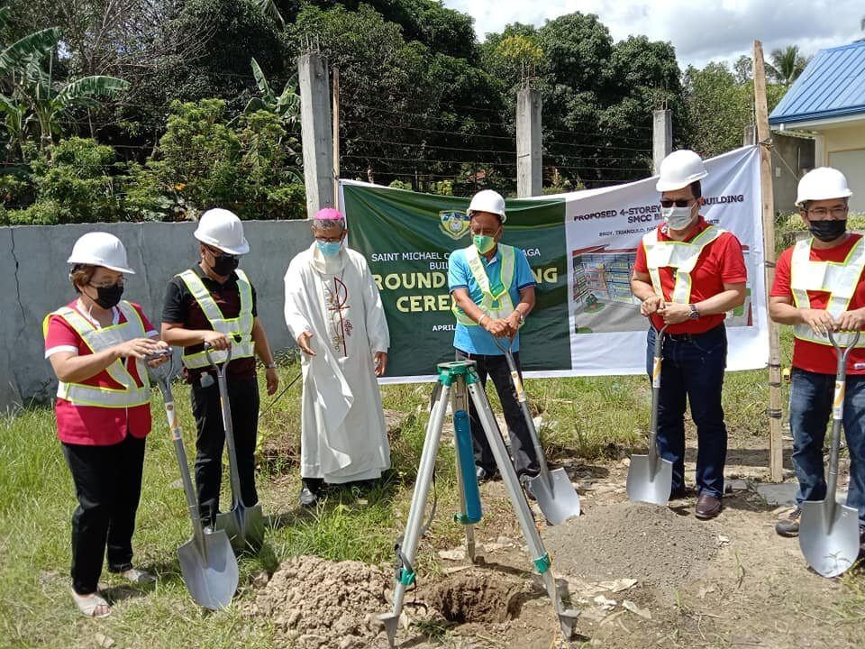
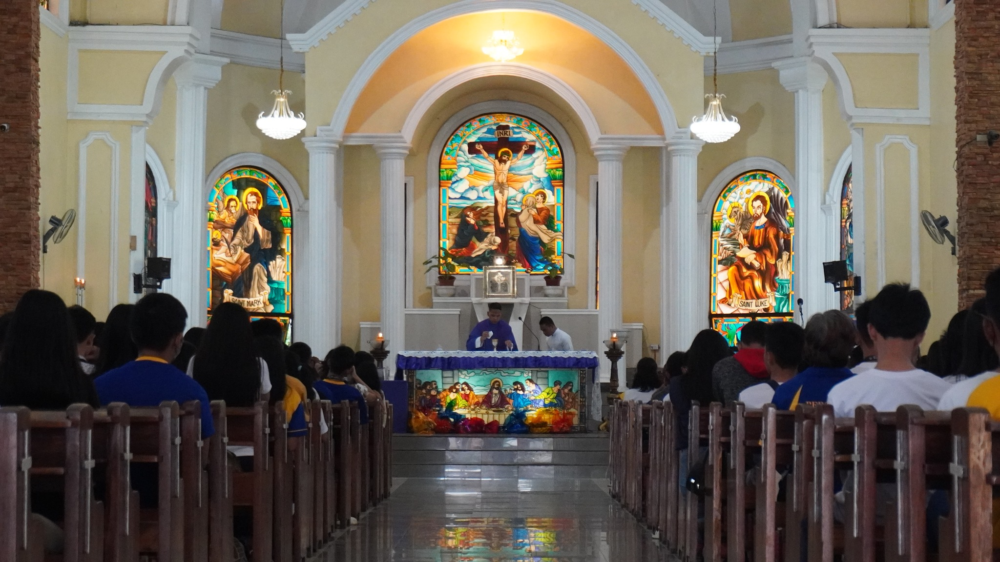

 

Noong lumago ang ekonomiya at populasyon ng Nasipit, ang Saint Michael Institute, na ngayon ay Saint Michael College of Caraga, ay ipinatayo ng mga Dutch Priests upang masolusyonan ang pangangailangan ng edukasyon sa bayan. Ito ay isang sekondaryang paaralan na gawa sa nippa-wood na matatagpuan malapit sa rectory. Sa paglilingkod ni Fr. Gerard, naging two-storey building na may 16 na silid-alaran ito. Kabilang ang mga layko, lumipas ang pamumuno ng maraming direktor hanggang kay Msgr. Gatela kung saan nagsimulang makaranas ng teknolohiya ang mga mag-aaral, na nagbukas sa computer science . Nabuksan din ang Teatro, Sayaw at Awit upang malinang ang pagkamalikhain at talento ng mga mag-aaral. Noong taong 2000 ay nagkaroon ng elementarya at kolehiyo ang SMCC.


Nagdesisiyong baguhin ang pangalan ng paaralan sa Saint Michael College of Caraga, na naging simula ng maraming pagbabago sa paaralan. Noong 2002 ay nagkaroon ng SMCC 2020 Flagship na may layuning patibayin ang Personnel, Instructions and Curriculum, Library, Research at iba pa na inilahad ni Dr. Mausisa, na siya ring nagpakilala sa Angel Festival . Pinuri ng TESDA ang kolehiyo ng SMCC bilang One of the Top Three Performing Schools in the Caraga. Ang www.my.smccnasipit.edu.ph ay ginawa at nagsilbing website ng SMCC simula noong 2007. Nagkaroon din ng sariling radyo ang SMCC na nagngangalang DXSM Kabayaning Michaelinian FM. Dahil sa mga ito, naging ISO CERTIFIED ang SMCC. Ang paaralan ng SMCC ay lugar upang linangin ng kabataan ang kaniyang kakayahang umisip at kumilos ng maayos sa buhay, na kanilang naipakita sa paggawa ng ibat-ibang paligsahan. Ito ay tumutulong hindi lang sa pag-linang ng kanilang kakayahan, kundi sa pagpapatibay ng tiwala at pakikipaghalu-bilo ng kabataan sa kapwa, lalong lalo na ngayon ay maraming anti-social dulot sa matagalang lockdown.
Dahil sa kapwa at komunidad, nalalaman nila ang kanilang lakas, kahinaan at interes sa buhay, na hinihikayat ng paaralan at ginagabayan ng Katolikong Simbahan . Sapagkat ginawa ito ng sinaunang pari, ang SMCC ay isang Catholic School kung saan binibigyang-halaga ang pagiging mabuting tao.


Hinuhubog ang kahalagahan sa sariling pagsusuri ng maling gawain at paga-alay sa kapwa upang tayo ay mabigyan ng tunay na kasiyahan sa buhay, na nanghihikayat sa atin sa paggawa ng mga pagbabago lalong lalo na ngayon ay materialisado ang mundo. Kagaya ng mga journalista sa SMCC, na gumagawa ng pagbabago sa paraang pagbabahagi ng wastong impormasyon, na posibleng paraan hindi lang sa pagpasa ng kaalaman, kundi sa paggawa din ng mga innovations Nabibilang na din dito ang DXSM-Kabayaning Michaelinian FM na naglalahad ng impormasyon sa malalayong tao. Sinusuportahan din ng simbahan ang ideyang equality na nagbigay-oppurtunidad sa ibat-ibang tao na sumali sa mga paaralang-aktibidad, na nagpababa din ng kasong discrimination. Isang sikat na aktibidad ay ang Angel Festival na ginawa ni Dr. Mausisa noong 2006. Naipapakita nito ang kahusayan at pagkamalikhain ng mga Michaelinians. Ang lahat nang ito ay nakatutulong sa pagkamit ng pangarap ng SMCC na maging unibersidad sa taong 2035!
"Saint Michael College of Caraga's Angel Festival"
PERSONAL/CONTACT INFO